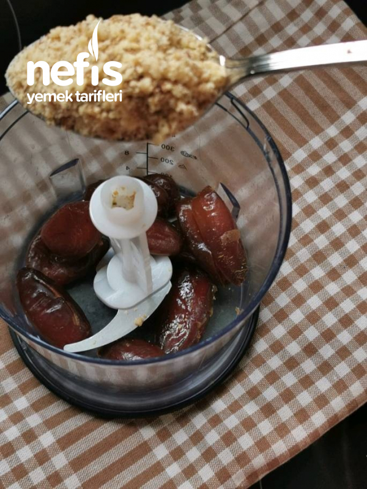
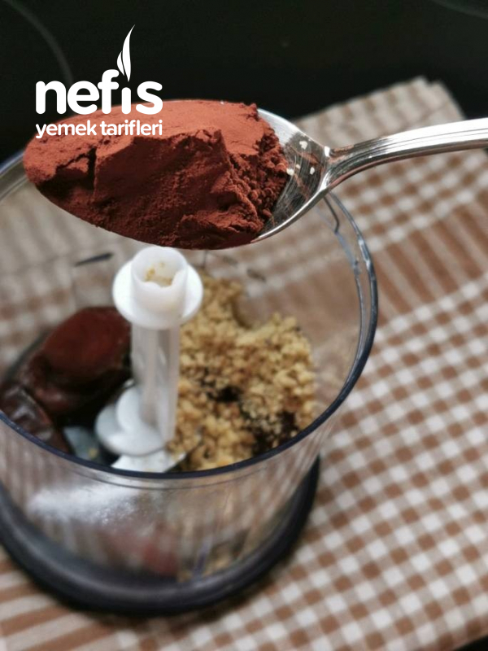
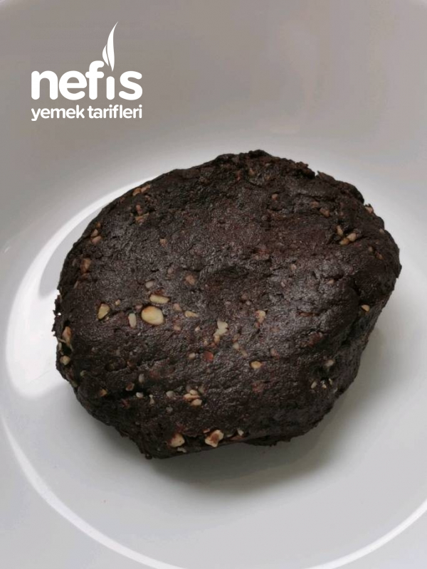
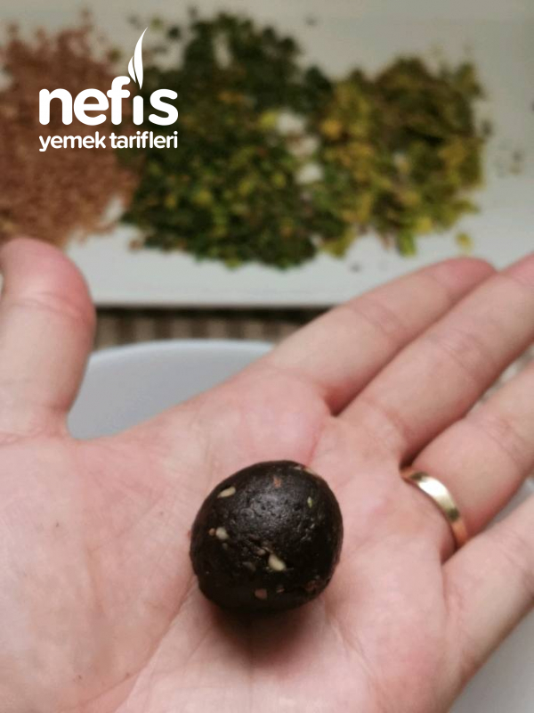
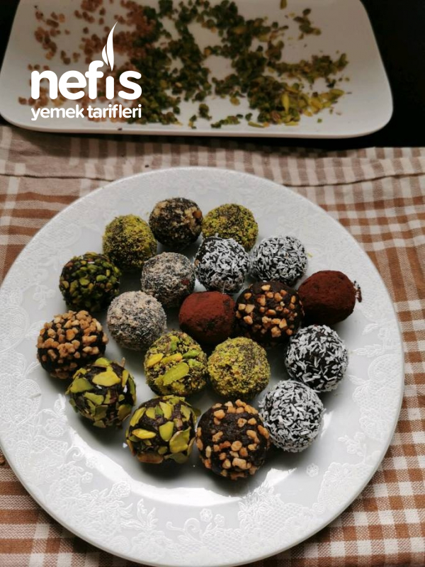
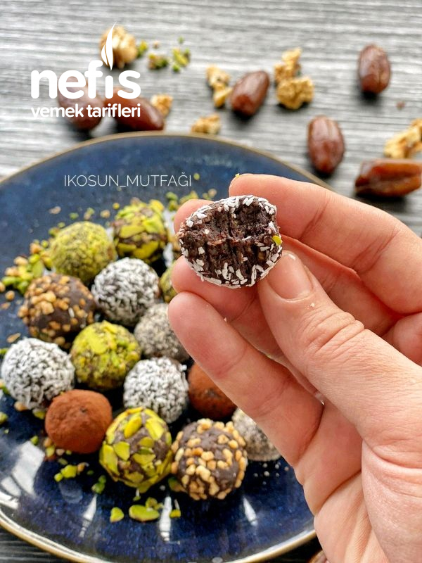

Malzemeler:
10 adet çekirdeksiz hurma
1 yemek kaşığı ince çekilmiş ceviz içi
1, 5 yemek kaşığı kakao
Bulamak için:
Hindistan cevizi
Fındık
Antep fıstığı
Kakao
Yapılışı:
| Hurma, ceviz içi ve kakao mutfak robotuna koyulur ve robotan çekilir. |   |
| Şekil verebileceğiniz bir doku elde edildiğinde, (resimdeki gibi) cevizden küçük parçalar alıp elinizle yuvarlayın. |   |
| Şekil verdiğiniz parçaları istediğiniz malzemeye bulayın. Deneyen herkese afiyet olsun |
  |